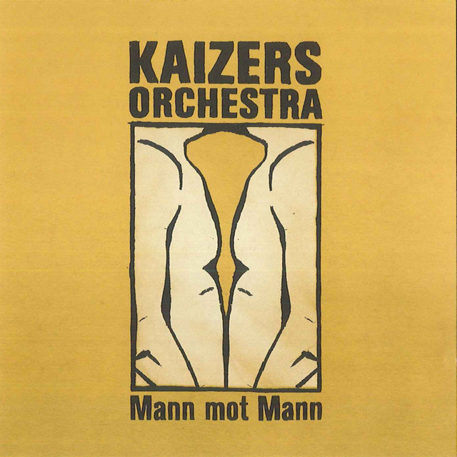

Mann mot Mann
|  |
|
Mann mot Mann er den andre EPen som kom etter debutalbumet Ompa til du dør. Den ble spilt inn på Lydriket i Bergen og mixet i Duper studio i Bergen. Det kom også to videoer til denne EP-en, "Kontroll på kontinentet" og animasjonsfilmen "Mann mot mann" laget av Tryllefilm i Stavanger.